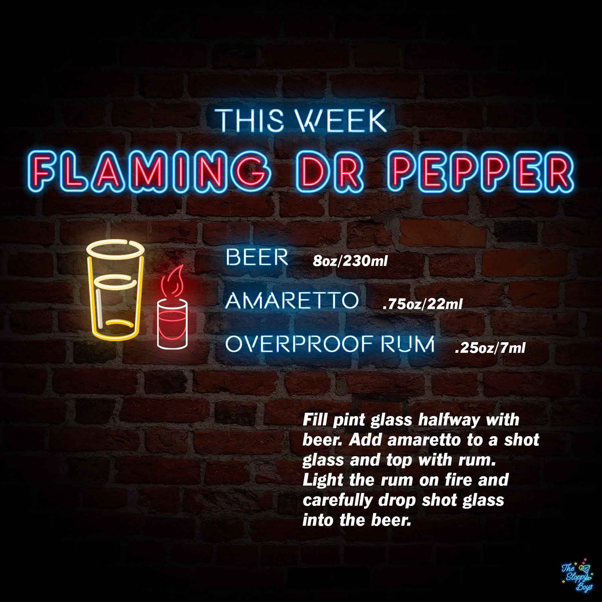

Flaming Dr. Pepper
Ingredients
- Beer (8oz/230ml)
- Amaretto (.75oz/22ml)
- Overproof Rum (.25oz/7ml)
Steps
- Fill pint glass halfway with beer.
- Add amaretto to a shot glass and top with rum.
- Light the rum on fire and carefully drop shot glass into the beer.
Notes